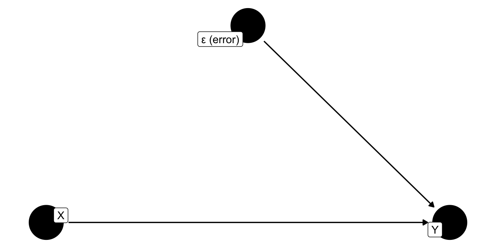
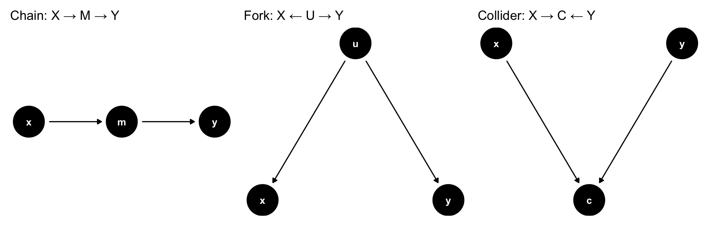
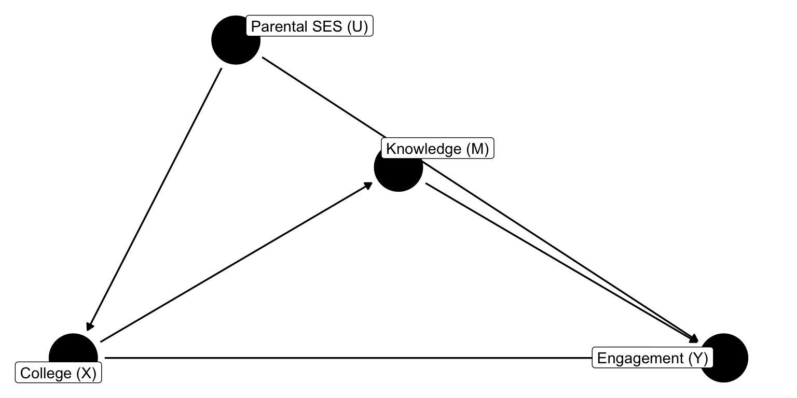

Show code
{ U }Causal Paths, d-Separation, and the Backdoor Criterion
Pictures are helpful
Gauss-Markov asked for a single thing of our covariates: they must be uncorrelated with \(\epsilon\).
But why might \(\text{cov}(X, \epsilon) \neq 0\)?
DAGs let us see these failures as paths on a diagram rather than derivations on a page.
A Directed Acyclic Graph is a sketch of causal relationships.
DAGs don’t tell you the causal structure. You provide these. This is a useful tool for ensuring correct specification.
An exogenous variable has no arrow pointing into it from anything in the model.

Figure 1: Exogeneity: X has no incoming arrows from Y or ε.
\(X\) is predetermined; nothing in the equation causes it. That is what OLS needs.
How do they “work”?
A path is any sequence of arrows connecting two variables, in either direction.
Both kinds of paths transmit statistical association. Only the first is a causal effect.
The whole game of DAG analysis is separating the two.
Every path is built from three intersection types:

Figure 2: Chains and forks transmit association and can be blocked by conditioning. Colliders block association but are opened by conditioning.
| Intersection | Shape | Open by default? | Conditioning on middle |
|---|---|---|---|
| Chain | \(X \to M \to Y\) | Yes | Blocks |
| Fork | \(X \leftarrow U \to Y\) | Yes | Blocks |
| Collider | \(X \to C \leftarrow Y\) | No | Opens |
The surprise is the collider. Controlling for a common effect creates an association between its parents. Things that should be independent become conditionally dependent.
Two variables are d-separated by a set \(\mathbf{Z}\) when every path between them is blocked.
A path is blocked by \(\mathbf{Z}\) if:
d-separation \(\Rightarrow\) conditional independence. This is the engine.
Pick a set \(\mathbf{Z}\) such that: (a) \(\mathbf{Z}\) blocks every backdoor path from \(X\) to \(Y\), (b) \(\mathbf{Z}\) contains no descendants of \(X\).
If such a \(\mathbf{Z}\) exists, regressing \(Y\) on \(X\) and \(\mathbf{Z}\) recovers the causal effect of \(X\) on \(Y\).
This is the formal rule behind “controlling for” something. Not everything deserves to be a control.
College, knowledge, SES.
Does college (\(X\)) cause voter engagement (\(Y\))?
Two other variables are in play:

Figure 3: College (X) → Engagement (Y), both directly and through political knowledge (M). Parental SES (U) is a confounder.
From \(X\) to \(Y\):
We want the total effect of \(X\) on \(Y\): close path 3, leave paths 1 and 2 alone.
Valid adjustment set: \(\mathbf{Z} = \{U\}\).
lm(Y ~ X + U) → total causal effect.lm(Y ~ X + U + M) → direct effect only.lm(Y ~ X) → biased by the \(X \leftarrow U \to Y\) backdoor.dagitty{ U }dagitty returns every minimal adjustment set that blocks all backdoors.
Why more controls is not always better.
A collider has two arrows pointing in: \(X \to C \leftarrow Y\).
This is how “controlling for everything” creates bias that wasn’t there.
Suppose \(X\) = athletic talent, \(Y\) = academic talent, and \(C\) = admission to an elite college (which demands either).
In the general population, \(X\) and \(Y\) may be independent. Among admitted students only (conditioning on \(C\)), they appear negatively correlated — if you got in without academic talent, you likely had athletic talent.
The negative association is an artifact of conditioning on the collider.
From the backdoor criterion, three operational rules:
adjustmentSets() enforces all three automatically.
Empty. \(U\) is unobserved, so no observable set blocks the backdoor through it.
This is exactly where instrumental variables enter — see the exogeneity lecture.
The DAG as a diagnosis.
Gauss-Markov demanded \(\text{cov}(X, \epsilon) = 0\).
A DAG makes this vivid: the error term represents everything we haven’t drawn. If an unobserved \(U\) is a fork between \(X\) and \(Y\), then \(U\) lives in \(\epsilon\) and is correlated with \(X\).
OLS is unbiased iff there is no open backdoor path from \(X\) to \(Y\).
Three routes to a correlated error term:
All three reduce to the same statement: there is an open backdoor from \(X\) to the outcome’s error.
POL 682 | DAGs